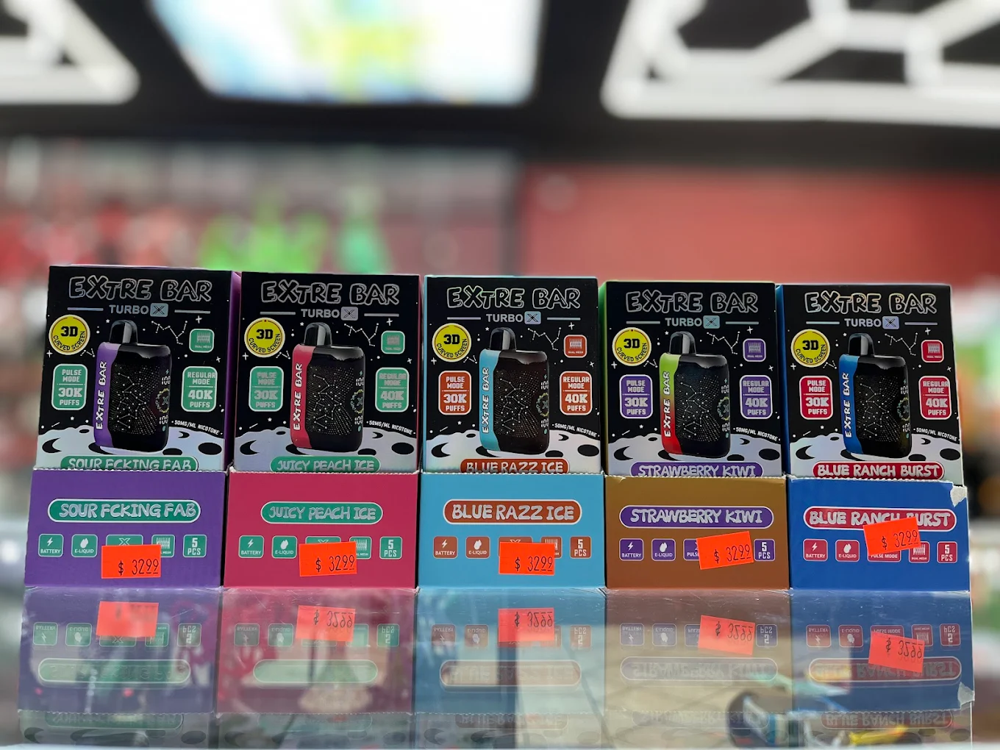

01
Curated Daily
PREMIUM VAPES
Statement-making disposables, refillable platforms, and limited flavor drops are merchandised like a luxury wall, not a convenience rack.
Staff can walk customers through nicotine strength, draw profile, and device format so the first pick feels intentional.
The mix stays broad enough for all-day staples and selective enough to still feel elevated.
- Disposable favorites, pod systems, and pro-level starter kits
- Ice, fruit, mint, tobacco, and dessert profiles
- Geek Bar, Lost Mary, Vaporesso, and rotating boutique labels

Flavor-forward wall
Fast-grab best sellers